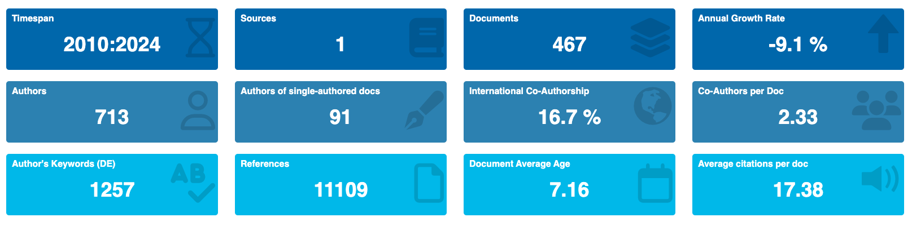
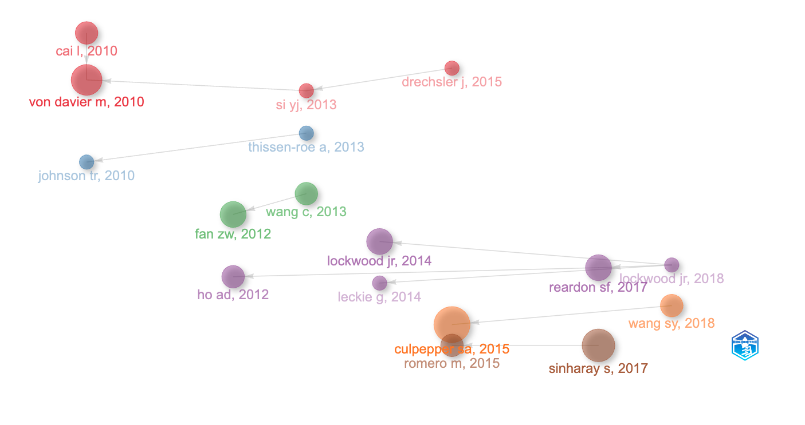

「教育與行為統計學」期刊最有影響力的 20 篇文章（JEducBehavStat 2010-2023）
🟣 魔法史
Journal Of Educational And Behavioral Statistics 教育與行為統計學期刊 是 American Educational Research Association, AERA 美國教育研究協會的主要期刊。由 Sage 出版。一年 6 期。
主要資訊

我們來看一下「教育與行為統計學」期刊的一些有趣數據。在 2010-2023 年，這期刊共有 467 篇文章，其中合著作者平均 2.33 位。每年成長率 -9.1%，文章平均年齡 7.16 歲，每篇文章平均被引用 17.38 次。這些數字背後反映了這個領域的研究活力和影響力。
研究話題地圖

「教育與行為統計學」期刊從 2010 年以來，最關鍵的 20+ 篇文章，大致呈現出 6 條主要的研究話題。以及許多單獨的重要文章。我們也提供文獻縮寫（和上圖對應），doi，以及中文翻譯名稱。文獻排序和圖上一樣，由上至下。有興趣的同學可以用 doi 去找到對應的文章。
話題１ 缺失資料和潛在變項（紅色，比重 23.5%）
- CAI L, 2010, DOI 10.3102/1076998609353115 用於確認性項目因素分析的 Metropolis-hastings Robbins-monro 算法 🌟 最出圈文章！(GCS: 156)
- VON DAVIER M, 2010, DOI 10.3102/1076998609346970 潛在回歸項目反應模型的隨機逼近方法
- SI YJ, 2013, DOI 10.3102/1076998613480394 大規模評估調查中不完整分類變量的非參數貝葉斯多重估算
- DRECHSLER J, 2015, DOI 10.3102/1076998614563393 多層次缺失數據的多重估算–嚴謹性與簡便性的比較
話題２ 試題反應理論（藍色，比重 11.7%）
- JOHNSON TR, 2010, DOI 10.3102/1076998609340529 使用因子分析多二項對數項目反應模型來考慮反應風格的個體差異
- THISSEN-ROE A, 2013, DOI 10.3102/1076998613481500 對喜歡類型項目的反應的雙決定模型
話題３ 反應時間模式（綠色，比重 11.7%）
- FAN ZW, 2012, DOI 10.3102/1076998611422912 利用反應時間分布進行貓的項目選擇
- WANG C, 2013, DOI 10.3102/1076998612461831 在計算機化測試中聯合分析反應時間和準確性的半參數模型
話題４ 測驗分數應用（紫色，比重 29.4%）
- HO AD, 2012, DOI 10.3102/1076998611411918 從 “能力”等級報告的測驗分數中估計成績差距
- LOCKWOOD JR, 2014, DOI 10.3102/1076998613509405 在用於估計治療效果的 ancova 模型中糾正測驗分數測量誤差
- LECKIE G, 2014, DOI 10.3102/1076998614546494 為兩級模型中的異質方差-協方差成分建模
- REARDON SF, 2017, DOI 10.3102/1076998616666279 使用異方差有序 probit 模型從粗略數據中恢覆連續測驗分數分布的矩
- LOCKWOOD JR, 2018, DOI 10.3102/1076998618795124 利用靈活的貝葉斯模型從粗略的群體水平成績數據中進行推斷
話題５ 貝氏相關技術（橘色，比重 11.7%）
- CULPEPPER SA, 2015, DOI 10.3102/1076998615595403 利用 Gibbs 抽樣對 Dina 模型進行貝葉斯估計 🌟 圈內人最愛！(LCS: 11)
- WANG SY, 2018, DOI 10.3102/1076998617719727 利用認知診斷模型跟蹤技能習得： 帶有協變量的高階隱馬爾可夫模型
話題６ 一些檢驗方法（紅色，比重 11.7%）
- ROMERO M, 2015, DOI 10.3102/1076998615595628 答案覆制指數的最優性： 理論與實踐
- SINHARAY S, 2017, DOI 10.3102/1076998616673872 利用似然比檢驗和分數檢驗檢測項目預知能力
Citation
BibTeX citation:
@online{2024,
author = {, JT},
title = {「教育與行為統計學」期刊最有影響力的 20
{篇文章（JEducBehavStat} 2010-2023）},
date = {2024-05-16},
langid = {en}
}
For attribution, please cite this work as:
J. (2024, May 16). 「教育與行為統計學」期刊最有影響力的 20
篇文章（JEducBehavStat 2010-2023）.